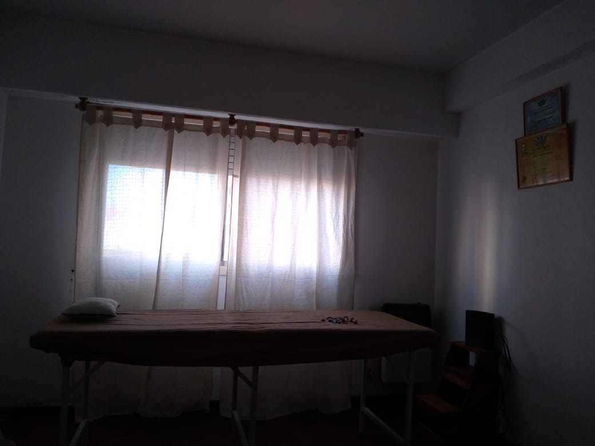
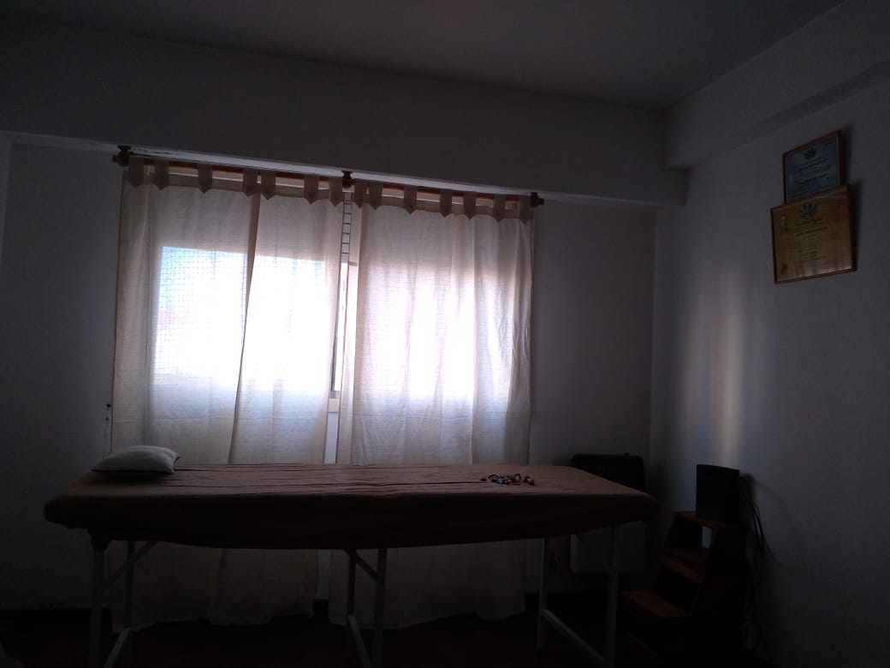

¿Qué es el reiki?
El Reiki es un técnica o terapia milenaria de origen japonés que el maestro Mikao Usui recuperó a finales del siglo XIX y que, desde entonces, ha ido extendiéndose hasta contar, en la actualidad, con millones de seguidores en todo el mundo.
Es una disciplina holística que se centra en todos los aspectos de la persona actuando a nivel físico, mental y emocional. Las manos son el elemento trasmisor que sirve para llevar esa energía positiva allí donde es necesaria de cara a que actúe sanando aquello que no va bien.
Sesiones

1Terapia de Espalda
La espalda es el eje más importante del cuerpo, un pilar óseo y muscular que nos ofrece
vida y resistencia, sobre la cual, en muchas ocasiones, añadimos un peso extra con
nuestras emociones negativas.
El dolor de espalda, mayormente tiene una misión, tiene un mensaje que transmitir.
El reiki es una terapia que consiste en transmitir energía sanadora a través de las manos.
Se trata entonces de dialogar con el dolor y saber escuchar las respuestas que él
nos da.
Allí es donde una sesión de Reiki, fusionada con los aceites esenciales y esencias
florales, actuará sobre el dolor en la zona determinada.
2Reiki Tradicional
Es una herramienta que nos permite incrementar los niveles de energía, equilibrándonos en forma integral (a nivel físico, mental-emocional y espiritual). tiene como objetivo mantener vivo el legado que nos dejó Mikao Usui (Maestro japonés, fundador de la primera escuela de Reiki en el mundo), además de proporcionar una plataforma práctica que pone en nuestras manos la posibilidad de sanar, armonizándonos.
3Puntos Marma
Son centros energéticos del cuerpo humano que ayudan a regular las funciones de los órganos principales, al tiempo que nos posibilitan restablecer el equilibrio del cuerpo y restaurar o potenciar la salud. Estimular dichos puntos marma, a través del masaje, da un efecto beneficioso sobre una zona específica del sistema cuerpo-mente. Al trabajar sobre los mismos, se brinda al paciente la posibilidad de reencontrarse en plenitud con la fuerza vital que lleva dentro.
4Barras Access
Consiste en tocar suavemente puntos en la cabeza que estan relacionados con aspectos como: salud, dinero, relaciones, sanación, etc.
Al tocar esos puntos se libera la energía que esta atorada en ellos por lo cual se te hace difícil cambiar.
Si te liberas de los puntos de vista preconcebidos acerca de tus limitaciones y de lo que piensas que no es posible y por ende una gran gama de posibilidades se abren para ti y tu vida.
Las Barras de Access pueden ayudar con la Ansiedad, Depresión, frustración, falta de sueño y a personas con déficit de atención, hiperactividad, personalidad obsesiva compulsiva, autismo, etc.
5Gemoterapia
La gemoterapia es la aplicación terapéutica de piedras y cristales con propiedades para encontrar el equilibrio y la relajación, además de regenerar la mente y el cuerpo. La gemoterapia sirve para alcanzar un estado físico-emocional sano y equilibrado. La energía que pasa a través de los minerales de las piedras se transmite a la persona que recibe la terapia y quien debe mostrarse abierta energéticamente hablando.
6Reiki Karuna
El Reiki Karuna, de la misma manera que el Reiki Usui, es un sistema de sanación energética por imposición
de manos basada en la acción compasiva y el amor incondicional. La diferencia de Reiki Karuna con el Reiki
Usui tradicional es que se basa principalmente en el uso de símbolos (agregando 11 símbolos nuevos a
nuestra práctica, que puedes visualizar más abajo), y hace especial énfasis en la aplicación de la
energía compasiva a nuestra práctica.
Es un sistema de canalización de energía muy místico. Procura la sanación a través de sentimientos
como el amor, la armonía, la paz, el perdón y busca abrir la compasión hacia todos los seres.
Implica tomar acciones destinadas a aliviar el sufrimiento propio y de los demás.
Galería
 


Todo sobre nuestros cursos

Nivel 1
En el primer nivel el alumno
se introduce en los
conocimientos
de Reiki, aprendiendo a
practicarlo para la
sanación física,
para sí mismo
y para otras personas.
Nivel 2
Nos llevará más adentro de
nosotros mismos
y nos proporcionará las
herramientas más
potentes para el auto
descubrimiento y
la integración.
El segundo nivel Reiki puede
ayudarnos
a sanar no
sólo nuestro cuerpo
o el de
Nivel 3
Se conoce como el nivel de la “Realización”,
de la conexión con nuestro Yo superior,
con la parte de divinidad
que todos somos. La iniciación
en este nivel de Reiki supone
una nueva expansión de consciencia
proyectándonos
hacia el cosmos,
hacia la fuente de nuestra vida,
de la energía Universal.
Imágenes de redes sociales de Moonlight:

Algunos servicios